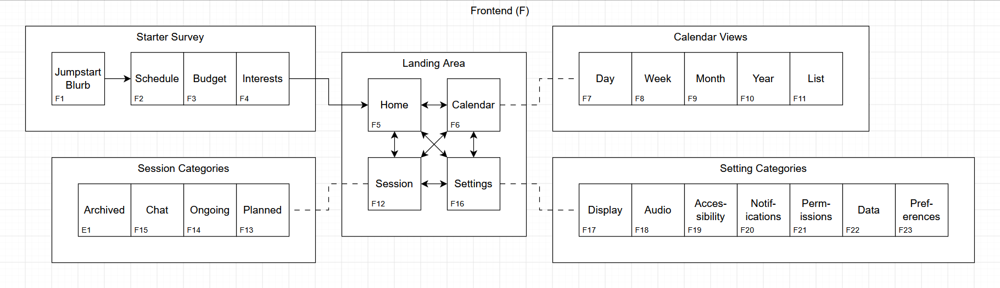
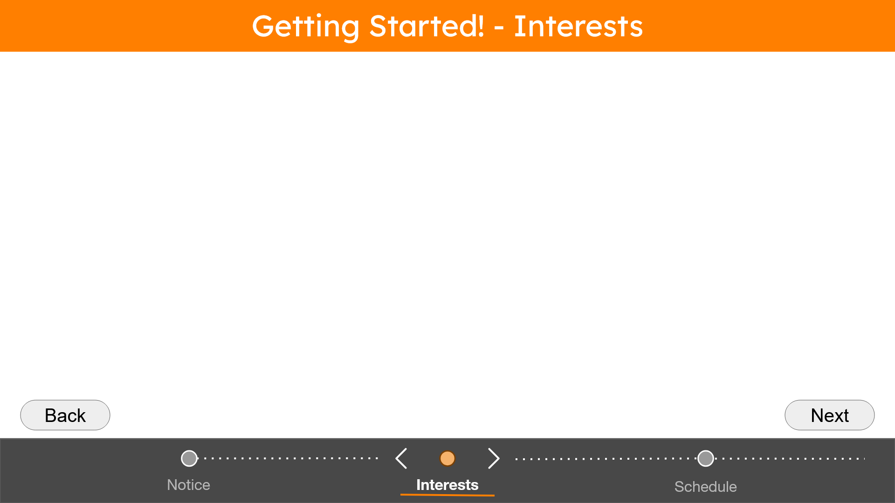
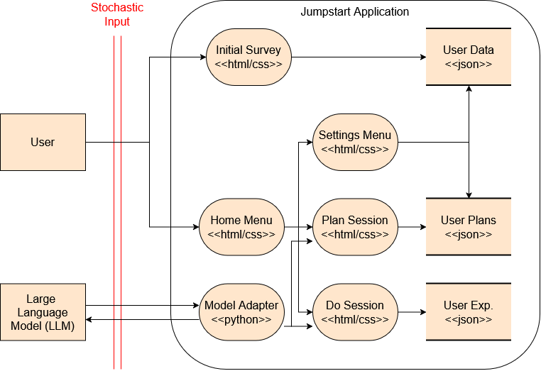
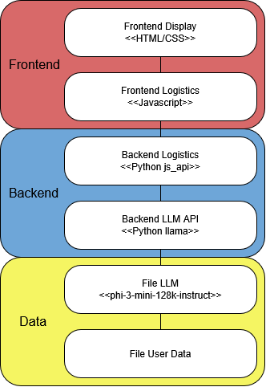

Developer's Perspective
How Is Jumpstart Made?
Original Plan
This section explains the plan for the overall structure of Jumpstart.
Frontend - Layout & Design
As a single-feature application, Jumpstart should be intuitive, navigable, and centered around its core feature. Figure 1 displays this by identifying the landing area, each page of which can access their own subpages and all other pages in the landing area.
Figure 1: Page Connections Overview
But the home page is not always the landing page for the user. On first launch, Jumpstart provides an optional startup survey, wherein the user is notified of application policy before being queried for guiding, general information such as hobbies they are interested in and what times they are available.
In terms of graphical design, Jumpstart strives to maintain a 60:30:10 color ratio of white, orange, and black. White and black are primarily used to maintain high-contrast text backgrounds, while the color orange is commonly associated with energy and enthusiasm, matching the motivational goals of the application.
Figure 2: Startup Survey Design Mock-up
Backend - Langauges & Libraries
When determining which languages to use, I judged on the following factors: familiarity, compatibility with LLM software, and frontend access.
- Familiarity was critical to ensuring that the project did not overscope due to learning pains.
- Compatibility with LLM software was mandatory to fulfill the core functionality of Jumpstart without making an interface by hand.
- Frontend access (specifically JavaScript interaction) was needed to ensure a user-LLM data pipeline.
After careful consideration, I determined that the following languages would be the best fit for myself and the project:
- Backend: Python, as it is quite familiar, the go-to answer when it comes to LLM operations, and has many libraries for JavaScript interaction.
- Frontend: HTML/CSS/JavaScript due to familiarity and the ability to copy-paste it in case of hosting a web version.
- Storage: JSON due to its simplicity, readability, and categorizaiton of data.
To connect the backend and frontend, I utilized the pywebview library to render HTML/CSS/JavaScript contents and communicate via a handmade API.
Figure 3: Data Flow Diagram
Model - Large Language Model (LLM)
To find an LLM that fit the local, lightweight, free-to-use nature of Jumpstart, I scoured GitHub until I found an updated source for newer models that are free to use, and selected the Phi-3-mini-128k-instruct. Initially, I was interested in YuLan-Mini and Phi-4, but the former lacked instruct capabilities and the latter was approximately 30 gigabytes (GBs).
Even after prioritizing The Phi-3-mini-128k-instruct, it was still almost 8 GBs and had many files associated with it. To addres this, I pivoted to using a Generic GPT Unified Format (.gguf) file, which compressed it into one, smaller file at the cost of performance quality.
To maximize compression while retaining performance quality, I finalized LLM selection by utilizing the Phi-3-mini-128k-instruct-Q4_K_M.gguf. Although it's a mouthful, it is free to use, great at creating hobby plans, and only 2.39GB.
Current Implementation
This section explains the current progress of Jumpstart.
Adapter Registry
To enable users to add their LLMs of choice, Jumpstart features an adapter registry; a system that allows the user to add LLM adapters of their own for local or online LLM usage. The system operates on an abstract factory class with an example implementation provided along with the aforementioned LLM.
System Prompt Rules
Evolving over the course of the project, the system prompt has acquired rules both to better align it with Jumpstart's intended goal, and to steer it away from unexpected outcomes. One example occured in almost every response: when the user wants to begin a hobby, the LLM would respond with a hobby plan encouraging subscribing to paid online courses.
This undermined the purpose of Jumpstart, as there was no research involved, no flexibility for alternatives, and outsourced all organizing to for-profit organizations.
Front-Back Pipeline
To enable user-LLM communication or file modificaitons from an HTML-based website, Jumpstart uses a chain of interactions between JavaScript, pywebview, my handmade pywebview API in python, and the resulting adapter.
For LLMs, this means forwarding the user's prompt to the currently-attached LLM adapter, which is as simple as a function that takes a string and returns another.
For files, this means utilizing another handmade module: JSON read/write. To maintain formatting, both JavaScript and Python utilize JSON functions to ensure compatibility before converting and writing the file.
Figure 4: Layer Diagram
Future
This section explains what's in store for Jumpstart.
MVP Release
By the end of next quarter, I plan to release Jumpstart as an open-source project under an MIT license. This depends on monumental amounts of progress and polish, but user testing is definitely within reach.
Testing Suite
As part of the project's completion, Jumpstart will utilize a combined objective/subjective testing suite. This combined system is used to address LLMs' nondeterministic behavior while watching key metrics.
The objective suite ensures that each module is functioning as intended, and that performative metrics such as LLM response time are within acceptable levels.
The subjective suite uses sample prompts and manual review to assess the LLM's ability to follow rules and provide relevant solutions.
Extensions (Stretch Goals)
Thanks to my peers and expert, I have many extensions planned for Jumpstart. These features would be opt-in and explicitly outline their dependent features and data.
- Google Calendar API Integration
- Group Hobby Planning
- Plan Difficulty Estimation
- Follow-up Plans
- Multi-stage Plans
- Local Event API Scraping
- Cross-Platform Support
- Hobby Plan Preview